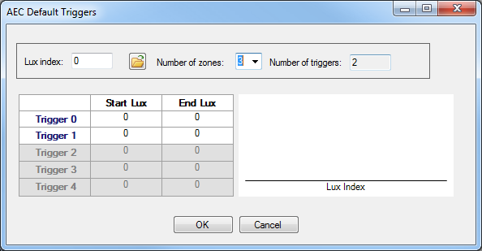

Generate a common set of AEC zone triggers by capturing images under given lux levels in the light booth.
If you use auto tune for initial tuning of ISP modules, the auto tune process automatically computes the AEC default triggers from an image loaded in the Image Gallery.
For manual tuning or fine tuning, use the steps below to tune the AEC default triggers. This procedure is generally used during the fine tuning stage of image quality tuning.
-
Enter the Lux index value of a JPEG image file taken of a 100% gray card under 400
lux lighting conditions using one of these methods:
-
Upload a JPEG image file taken of a 100% gray card under 400 lux and D65 illuminant that includes the 3A debug information in the EXIF header. Click
 and select the image file. The
lux index is read from the EXIF header.
and select the image file. The
lux index is read from the EXIF header. -
Manually enter the Lux index value from a photo of a 100% gray card image that was taken under 400 lux light condition.

-